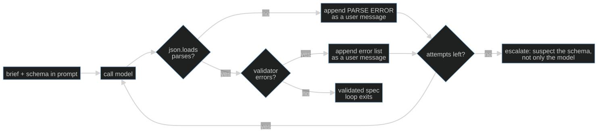

S04-structured-generation — The ticket contract
Carried in: cafe/context.py — compaction policies, retained-rule evidence, and measured compliance after the boundary. Now the reply must cross a contract boundary too.
Today you ship: cafe/schema.py — the ticket contract, a hand-rolled stdlib validator, and a bounded validate-and-retry loop.
What this teaches: structured generation as a contract with two gates — shape against a schema, meaning against tonight's data — plus error-feedback retries, a cap you choose, and why a valid ticket is not automatically a correct one.
Time: 20–40 min active reading, 30–60 min notebook work, 5–10 min self-check.
These are planning estimates, not measured learner timings. Prerequisites: S01 (the loop), S02 (the checkers).
Hands-on: toy.py — runs against your model.
The hook
A customer orders. The model answers with a friendly paragraph, a fenced code block, and a price nobody ever quoted. The kitchen's ticket system eats JSON and nothing else, so none of it reaches the pass.
So you add a schema. The model now returns valid JSON every single time — and one of those valid tickets asks the kitchen to cook an item it ran out of two hours ago, at a total that is wrong by eighty cents. The schema did exactly what you asked. It was not enough.
The promise
By the end of this session you will have a ticket contract, a validator you wrote yourself out of stdlib pieces, and a capped retry loop that turns validation errors into messages the model can act on. You will also be able to explain why valid is not correct, and point at the checker that catches the difference.
The theory in depth
The contract is a data model, not a prompt style
TICKET_SCHEMA describes what the kitchen's system accepts: table as an integer,
items as a non-empty array drawn from the menu, total_eur as a number,
allergen_checked as a boolean. The menu itself is the enum — enums are policy,
and a schema is the place where policy gets written down where a machine can check
it.
The validator is a stdlib subset of JSON Schema: type, required,
properties, enum, items, minItems. That is deliberate. A library is these
same checks with more keywords; writing them once means you know exactly which
promises your contract does and does not make. One detail earns its place
immediately: bool is an int in Python, so a table number of True passes a
naive integer check. The validator excludes it, because True is not a table.
Two gates, not one
The first gate is shape: is this the object the contract describes? The second is
meaning: does it agree with tonight's menu and prices? checkers.ticket_matches_menu
from S02 is the second gate — it catches an 86'd item by name and a total that does
not match the menu sum. A ticket can clear the first gate and fail the second on
every field the schema allowed. This is the session's central fact: the schema
constrains what you thought to describe; it cannot constrain what you forgot.

Replies arrive broken in two ways
Before validation there is parsing. parse_json recovers an object from a real
reply: it strips code fences, tries the whole string, then falls back to the first
{ through the last }. Two distinct failures reach the retry loop, and they need
different feedback:
PARSE ERROR— there was no object to validate. The fix is to ask for the raw JSON only, no prose, no fences.VALIDATION ERRORS— there was an object; the schema rejected it. The fix is the error list, verbatim, with paths like$.items[0].SEMANTIC ERRORS— the object was valid and disagrees with the menu. The fix is the menu disagreement, not a schema lecture.
Specific errors are the whole mechanism. A model cannot act on "invalid"; it can act
on "$.table: expected integer, got \"four\"".
The loop is capped, and the transcript stays legal
ask_ticket gives the model at most three attempts. An uncapped retry loop is a
non-terminating agent holding your budget. Each attempt appends the assistant turn
verbatim before the feedback — the S01 invariant, reused, so a model that
answered with a tool call still has its message and every result paired. The
returned message list is the receipt: it shows exactly what the model was told
after each failure. ask_ticket retains its (ticket_or_None, messages, attempts)
interface. ask_ticket_run also returns every attempt's parsed, shape_ok,
semantic_ok and error lists. Meaning is not evaluated when shape fails;
semantic_ok=None records that distinction. Final acceptance never erases an
earlier error.
Escalation is a decision
Three failures on the same brief is data, not noise. A repeated identical error is the contract talking: either the model cannot produce this shape, or the schema is wrong for the task. S04's diagram ends on that fork on purpose — when retries are exhausted, the honest next move is to suspect the schema as much as the model.
Build (in the notebook, predict first)
Open toy.py
with your endpoint already exported.
- Predict the validator. Before running: which of a ticket missing
total_eurwith"table": "four", and a correct two-item ticket, doesvalidateaccept — and what exact error does it hand the other one? Then run the cell. - Predict the semantic gap. A ticket below is schema-valid. Write down how
many semantic violations it should earn and name them. Then implement
attempt_semantic, which must check the shift data rather than the schema. The reference ischeckers.ticket_matches_menubehind a switch. - Predict the live run. For each of the three briefs, write down parse error,
schema invalid, semantically wrong, or accepted — and on which attempt. Then run
ask_ticket_runagainst your endpoint. Briefs that fail all three attempts are data; your model's results may vary. - Read the assertions. They do not claim your model produces valid tickets. They claim the machinery: the validator accepts a hand-built reference and rejects an off-menu item on the enum; a valid-but-wrong ticket passes the schema and fails the semantic checker; and the retry loop keeps the conversation protocol-legal across every attempt.
Checkpoint — the number you bank
Compare first attempts: how many of the three were schema-valid, and how many also matched the menu? Separately count final accepted tickets after retries. Every accepted ticket already passed both gates; comparing only final tickets hides the errors the loop repaired. A zero first-attempt gap is a valid result.
Bank both numbers with the model name. When you report them, keep the distinction intact: "valid" is a claim about shape, "correct" is a claim about agreement with tonight's data.
State of the art (as of August 2026)
| Development | Status | Take |
|---|---|---|
| JSON Schema | already in this path | The subset in cafe/schema.py is this specification minus the parts a café ticket does not need. Read the enum and items sections and you can reconstruct the validator. |
| OpenAI structured outputs | recognize | Server-side schema enforcement that makes the parse failure mostly disappear. It does not touch the second gate — a conforming object can still name an 86'd item. |
| Outlines | recognize | Constrained decoding removes the invalid shape before it is generated. Same goal as your retry loop, moved earlier in the pipeline and out of your control. |
| Guidance | recognize | Interleaves generation with program structure so the contract and the output share one grammar. Worth reading as the alternative to validate-and-retry. |
| Instructor | adopt | The validate-and-retry loop you just hand-rolled, packaged and maintained. Read its error-feedback behaviour against yours before you decide you need it. |
Annotated readings
- JSON Schema,
enumand array keywords only — extract: how a schema expresses policy (the menu) rather than just structure. Then decide what it means that tonight's 86 list is data, not an enum. - OpenAI structured outputs guide — extract: what the API guarantees about the object's shape and what it explicitly does not guarantee about its content. That sentence is S04's thesis, written by someone else.
cafe/schema.py,ask_ticket— extract: where the assistant turn is appended and why it has to be recorded even when the attempt fails. The receipt is only useful if it is complete.
Misconceptions and failure modes
- "Valid JSON is a correct ticket." Validity is shape. Correctness is agreement with tonight's menu, prices and 86 list. Two gates.
- "Give the model the errors and it will fix them." Sometimes. That is why the loop is capped, the attempt count is returned, and three identical failures are treated as information about the contract.
- "The schema is model-independent." Any schema that enumerates the menu encodes tonight's policy. When the menu changes, the enum changes with it.
- "Retries are free." Every attempt is a paid call. A cap is a budget decision (S11), not a politeness.
- "Parse errors mean the model is broken." They mean the reply contained no object. Ask for raw JSON and no fences, then look at the receipt before blaming the model.
Self-check
Why does the validator reject a boolean for table instead of accepting it as an integer?
Because `bool` subclasses `int` in Python: `isinstance(True, int)` is true, while
`type(True) is int` is false. A table number of `True` is nonsense, and a contract that accepts it is
weaker than it reads. The validator excludes bool explicitly.A ticket passes the schema but names an 86'd item. Which gate failed, and who catches it?
The second gate, meaning. The schema only knows the enum of menu items; it has no knowledge of tonight's stock. `checkers.ticket_matches_menu` catches it — the same kind of deterministic checker you learned to trust in S02.Why is the retry loop capped at three attempts and not "until it works"?
Because an uncapped retry loop is a non-terminating agent with your budget in its hand. A cap turns "it never produced a valid ticket on this brief" into a countable outcome, which is what makes it reportable.The model fails all three attempts with the same validation error. What does that tell you?
That the feedback is not moving the model — either it cannot produce this shape or the schema is wrong for the task. Repeating the same request a fourth time is not a fix; suspect the contract and read the receipt.What this unlocks
You can now force a shape and tell a valid reply from a correct one. But a
perfectly valid, perfectly correct ticket is still only a proposal — and
fire_ticket is irreversible. S05 — The consent gate
puts a human confirmation between the two, and asks what your harness does when the
customer says no.